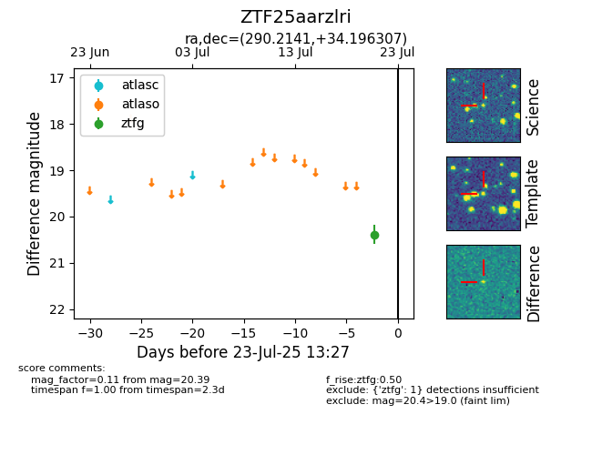

Target ZTF25aarzlri at 2025-08-06 17:27, see:
FINK: fink-portal.org/ZTF25aarzlri
Lasair: lasair-ztf.lsst.ac.uk/objects/ZTF25aarzlri
ALeRCE: alerce.online/object/ZTF25aarzlri
alt names
ZTF25aarzlri (ztf,fink)
coordinates:
equatorial (ra, dec) = (290.2141,+34.19631)
galactic (l, b) = (66.6995,+9.32561)
photometry
last ztfg=20.15
5 ztfg detections
